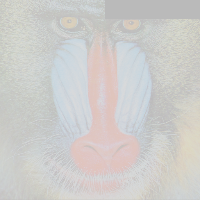

Image Preprocessing
We look at some image processing techniques and try to implement them from scratch.
So before we start, let us import the usual packages and load two images. Our beloved mandrill and an image of the earth. We also define a function to take an array and resize it and display it as an image.
using Plots, Images, ImageView,Statistics, Distributions, TestImages
imageret(x) = imresize(colorview(RGB,x),(200,200))
image1 = TestImages.testimage("mandrill");
imageret(image1)
image2 = TestImages.testimage("earth_apollo17")
imageret(image2)
Random crop
Once we have this, we can look at our first pre processing technique. Random cropping. We aim to randomly black out parts of the image in this. We first copy the image (to prevent the original from being modified) and convert it to an array. Then we index into it and randomly choose a range of x and y coordinates to set to 0. We then just return the image.
function randomCrop(im)
temp = copy(channelview(im))
temp[:,1:rand((1:end)),1:rand((1:end))] .=0
return temp
end
imageret(randomCrop(im2))

As you can see, part of the image is gone. This does lead to a loss in the image content.
Random change in brightness and contrast
We use the formula $$\alpha \cdot x + \beta$$ where $$\alpha$$ and $$\beta$$ are values between 0 and 1 which represent the brightness and contrast in the image. To modify it, We convert all the values in the image using this formula and randomly generated values for $$\alpha$$ and $$\beta$$. We also clamp the values between -1 and 1 as the function is defined there.
function imageJitter(im)
changer(x,α, β) = clamp.(α .*x .+β, -1, 1);
α,β = rand(Uniform(0, 1.0),1)[1], rand(Uniform(0, 1.0),1)[1];
return changer(im, α, β)
end

Here we get an image with high brightness and low contrast.
Random Flip
This was almost hilariously easy but anyway. We need to randomly flip either up/down and/or left/right or not at all. So we index into the arrays and flip them. We also keep 3 cases and then just output a single choice between them.
function randomflip(x)
rand([x,x[:,end:-1:1,:],x[:,:,end:-1:1]])
end

In this case it was flipped upside down.
Gray scale
We have done this many times before but for the sake of consistency.
togray(x)= return Gray.(x)
Mixup
This is a newer technique and was talked about in this paper. It basically involves choosing a weight and superimposing an image onto another. The network is then forced to spit out 2 labels instead of one. This prevents overfitting and leads to greater generalization. The drawback is that mixup generally takes a longer time to converge. But when it does, it works better. It is also said that mixup might remove the need to have any other data augmentation techniques.
We resize both the images into the same size first. Then we convert them into arrays. We also take a random value between .5 to 1.0 as the weight. The formula for mixup involves taking both the image matrices and weighted adding them together like this $$t \cdot im1 + \left( 1 - t \right) \cdot im2$$
function mixup(im1,im2)
im2 = imresize(im2, size(im1))
im1, im2 = channelview(im1),channelview(im2)
t = rand(Uniform(.5, 1.0),1)[1]
@show t
return (t.*im1) .+ (1-t).*(im2)
end
tem = mixup(image1,image2);

Multiple transforms
The last thing we will see for now is how to chain multiple transforms for an image. Honestly, I could do more but I am so tired I just want to sleep. Anywayy. This is stupidly simple in Julia. All we have to do is use the |> operation. This is called a pipe and basically passes an output to another function or an input to a function and so on.
So to call all the functions so far, and display the image.
imageret(im2 |> randomCrop |> randomflip |> imageJitter )

If you look closely, you can see random cropping, vertical flipping and obviously changed brightness and contrast values. Yay!
There are other functions like warp/ affine transform. I tried making those but it seemed really complicated so I will leave that for a future blog post.